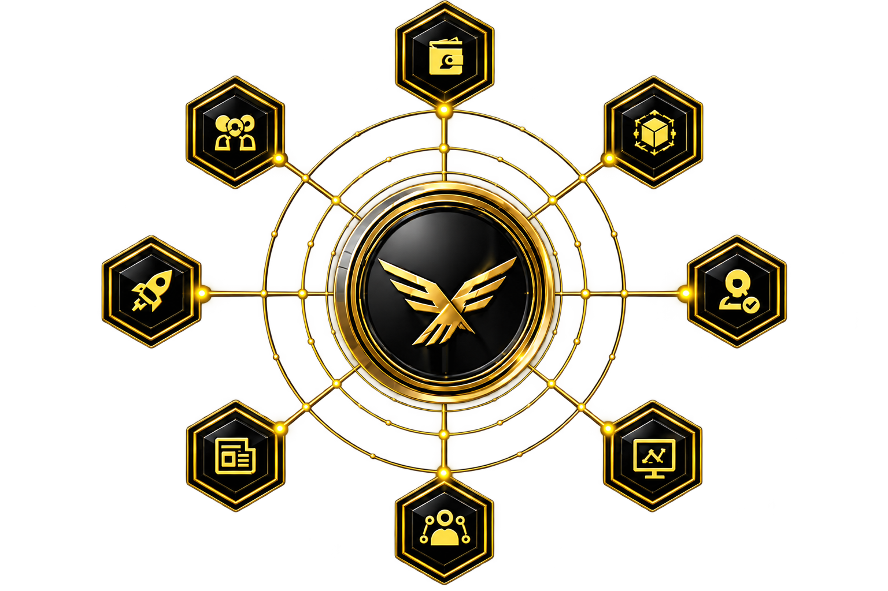
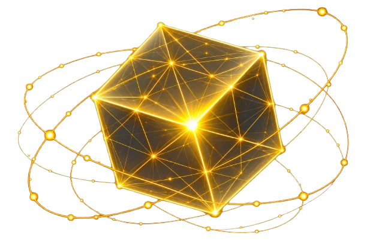
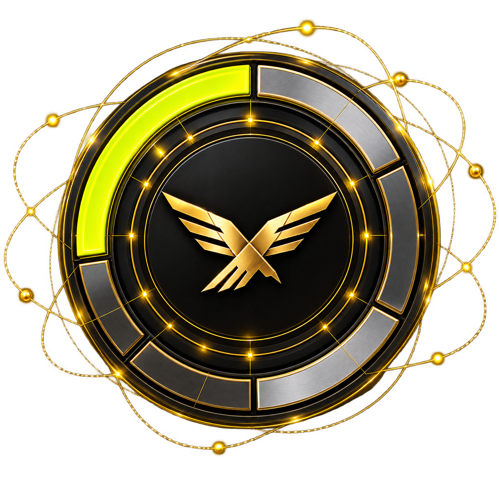
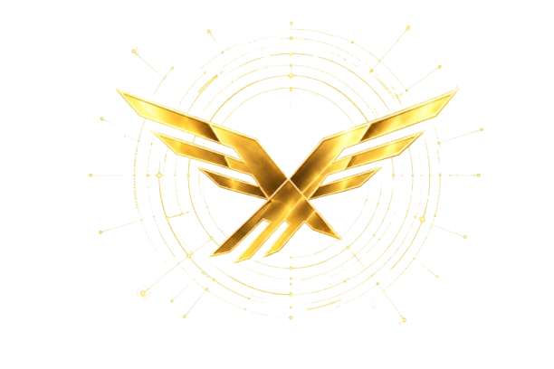

Total Supply
1,000,000,000
WLT
WLT connects the tools, people, and opportunities that power a fair and open digital future.

One utility token connecting people, ideas, and a more open digital future.

Real utility that drives adoption and long-term sustainability.
Audited smart contracts and trust-first governance built on-chain.
The power of decisions belongs to the people, not a central entity.
Built to scale globally with high performance and low fees.

WLT is the foundation of a new digital economy—where freedom fuels innovation, trust drives collaboration, and everyone has the power to build a better future.
The latest news, insights, and milestones from the WLT ecosystem.
View all news →
Join a global movement for digital liberty.
Create your account and start your journey today.